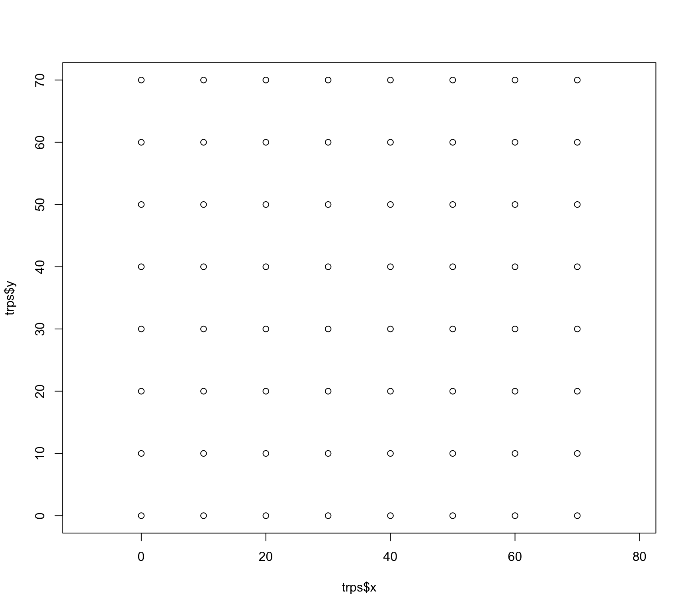

Es wurde eine Populationsgröße von 52 Individuen geschätzt. Wie kommen wir zur Dichte (z.B. Individuen pro ha)?
Es handelt sich um ein Fallengrid mit einer Entfernung von 10 m zueinander. Insgesamt existieren 64 Fallen (8x8). Es wurden 70x70 m sicher beprobt. Die Division von 4900 \(m^2\) 52 Individuen führt zu einer Überschätzung, da es Streifgebiete gibt, die nur partiell in der Probefläche liegen. Eine Lösung ist die Pufferung (siehe unten).
Wie kommt man zu einer Dichte?
trps <-readRDS(here::here("daten/apfl_traps.rds"))plot(trps$x, trps$y, asp =1)

Wir könnten den Fallengrid als Bezugsgröße heranziehen:
Nh / (70*70) *10000
[1] 106.6327
Oder besser mit einem Puffer von 10 m
Nh / (80*80) *10000
[1] 81.64062
Oder 20 m?
Nh / (90*90) *10000
[1] 64.50617
In der Praxis werden oft die Fangstandorte mit der MMDM gepuffert.
MMDM (= Mean Maximum Distance Moved) und ist der Mittelwert der maximalen Distanz zwischen zwei Fangstandorten aller Individuen.
Annahmen
Markierungen gehen nicht verloren.
Jedes Individuum wird mit der gleichen Wahrscheinlichkeit gefangen.
Markierungen beeinflussen das Verhalten der Tiere nicht und führen nicht zu erhöhter Mortalität.
Es findet keine Immigration oder Emigration statt (Population bleibt konstant).
Was versteht man unter Emigration und Immigration?
Fallen Neutralität
Individuen dürfen Fallen nicht bewusst meiden bzw. sich davon angezogen fühlen.
Es muss darauf geachtet werden, dass einmal gefangene Individuen nicht die Fallen meiden.
Fallen vor dem Fang im Feld stehen lassen.
Der 2. Fang kann rein visuell sein (z.B. Skalski et al. 20051, Ohrmarken bei Rothirschen).
Geschlossene Populationen
Wir haben bis jetzt immer angenommen, dass keine Migration, Zuwachs oder Reduktion stattfindet. Diese Annahme hält über verhältnismäßig kurze Perioden.
Offene Populationen
Wir können diese Restriktionen lockern, aber die Verfahren werden komplizierter.
Räumliche Fang-Wiederfang-Methoden
Alle Fang-Wiederfang-Methoden, die wir bis jetzt kennen gelernt haben, vernachlässigen den Raum.
Man geht davon aus, dass die Abundanz und Fangwahrscheinlichkeit konstant sind (keine räumlichen Effekte).
Spatial Capture Recapture (SCR) verwendet die Position der Fänge.
Somit kann die Fangwahrscheinlichkeit als Funktion der Distanz zwischen der Position einer Falle (\(\mathbf{x}_j\)) und dem Aktivitätszentrum (\(\mathbf{s}_i\)) des Tieres modelliert werden:
![]()